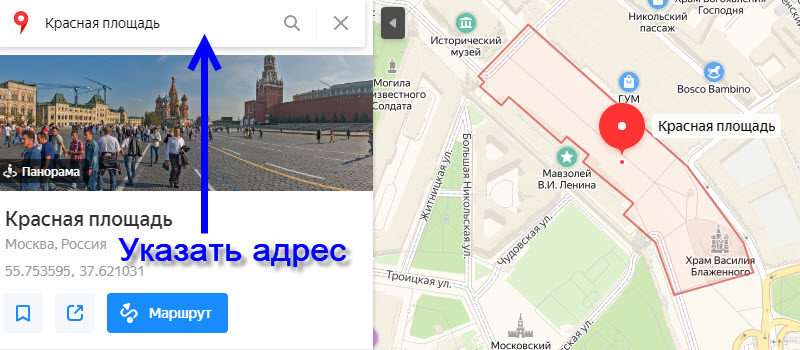
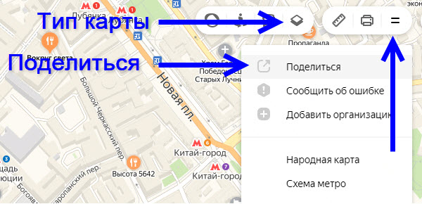
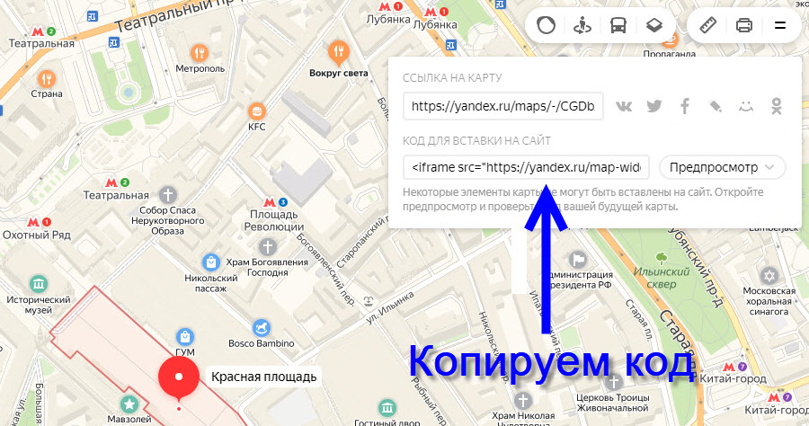

В основном в шаблонах подключаются стандартные файлы и скрипты.
Ниже указаны их адреса и выполняемые функции:
Кодировка всех файлов шаблона utf-8
Выше указаны лишь основные, часто используемые в шаблонах скрипты - желательно не корректировать их код, они являются догмой в веб-программировании.
При достаточных навыках в программировании редактированию подлежит пользовательский файл style.css, который дополняет и корректирует стиль основных файлов.
В дистрибутиве шаблонов могут присутствуют не задействованные в работе скрипты и CSS файлы.
Можете покопаться в них и дополнить функциональность шаблона, например модернизировать анимацию wow, галерею фото, добавить или разнообразить слайдеры и т.д.
Все шаблоны состоят из файлов.html (страниц) и папок (директорий).
Главная страница index.html открывается по умолчанию при вызове сайта по адресу домена: http://вашДомен.ru/
Файлы дизайна лежат в папке css/, файлы сценариев в - js/, картинки в - img/.
Шаблон(домен)/
index.html - главная страница
страница 1.html - дополнительная страница
страница 2.html - дополнительная страница
страница 3.html - дополнительная страница
contact.html - страница контактов
└── папка css/
├── bootstrap.css
├── style.css
├── font-awesome.min.css
├── animate.css
├── и т.д.
└── папка js/
├── bootstrap.js
├── jquery.min.js
├── respond.js
├── и т.д.
└── папка img/
├── images1.jpg
├── images2.png
├── images3.gif
├── images4.jpg
├── и т.д.
Иерархия стандартного шаблона сайта
В общих словах. Все действия связанные с редактированием контента, сводятся к одному:
- заменить весь имеющийся русский, английский текст на свой;
- заменить исходные картинки на свои изображения;
- при желании поменять блоки или секции местами.
Проверяем адаптивность сайта к просмотру на мобильных устройствах
Копируем код с YouTube используя кнопку "Поделиться", далее из всплывшего окна нажимаем ссылку слева от кнопок соцсетей "Встроить".
Код должен иметь примерно такой вид, как показано ниже (без <div class="...">...</div>):
<div class="embed-responsive embed-responsive-21by9">
<iframe width="100%" height="515" src="https://www.youtube.com/embed/1ihRG9DObAU" frameborder="0" allow="accelerometer; autoplay; encrypted-media; gyroscope; picture-in-picture" allowfullscreen></iframe>
</div>
Можете скопировать этот код целиком с окутывающими <div class="embed-responsive embed-responsive-21by9">...</div> и вставить в свой шаблон. Необходимо заменить в нём только ссылку на другое видео.
При этом в ссылке обязателен параметр /embed/, пример: https://www.youtube.com/embed/1ihRG9DObAU
Вставляем скопированный код с YouTube в предполагаемое место. Как правило в шаблоне уже прописан видео файл и будет достаточно заменить код на свой. Часто это место окутано комментариями.
В скопированном коде можно менять параметры width="560" (ширина), height="315" (высота) на свои, допустим на: width="100%", height="500".
Адаптивность подобной конструкции будет обеспечена лишь в том случае, если в шаблоне (на сайте) используется фреймворк Bootstrap. Чаще всего этот популярный фреймворк уже подключен в современных шаблонах. В крайнем случае подключить его не сложно.
В живом примере выше окно видео пропорционально уменьшается при уменьшении зоны просмотра браузера.
Убедитесь в этом, сокращая ширину браузера.



Обращайтесь через форму обратной связи на сайте SiteY.ru:
Admin SiteY.ru = Сергей =